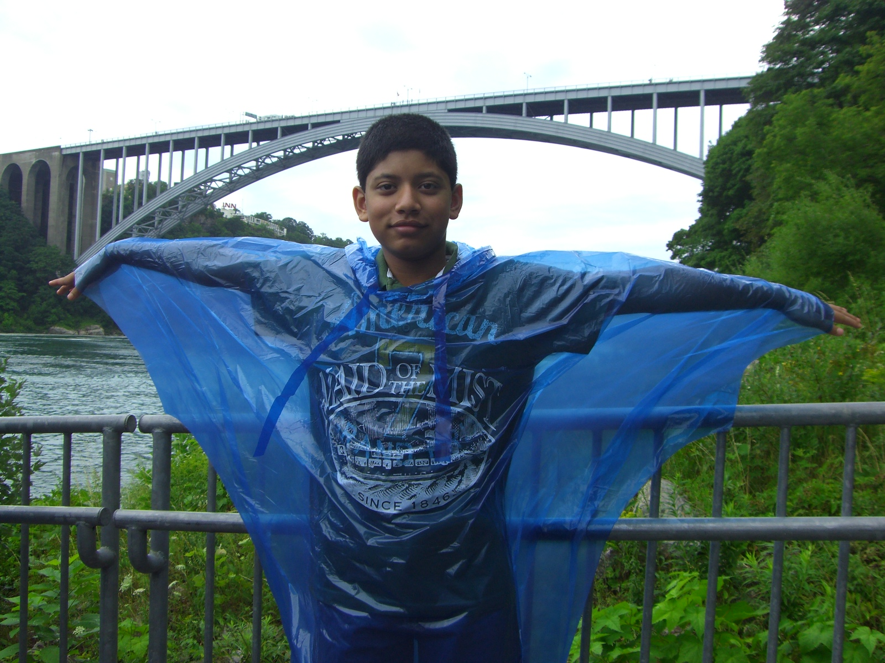
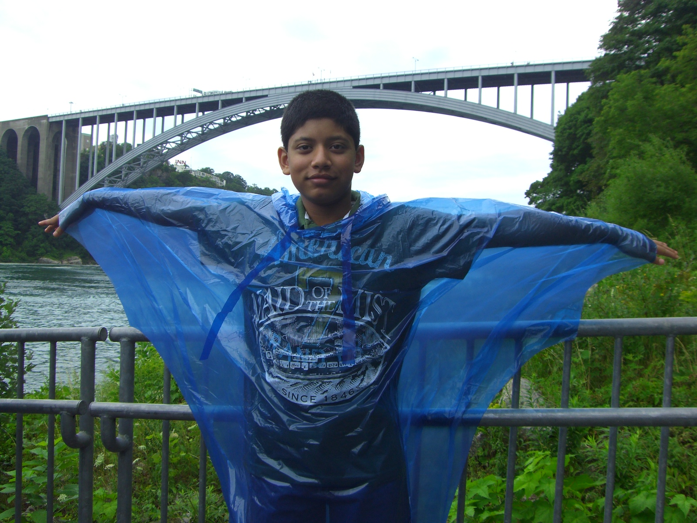

Homes
I have been fortunate enough to call three countries my home. Living in these countries has taught me to appreciate diverse cultures and adapt to my surroundings. This has also allowed me to connect with people across various nationalities, cultures, and ethnicities, develop a love for food, and make everlasting memories.
California, USA | 2012 - Present
I have been living in California since 2012. I have many fond memories from my time in California, be it getting caught up in the insatiable sense of competition that existed between different rafts during Orinda Aquatics’ annual rafting trip, spending countless hours learning how to do backflips on the trampoline and playing spike ball with my friends during the summer before college, or walking from booth to booth at the State Fair with my parents while breathing in the aromatic intoxicating aroma that was created by the blending of the individual mouthwatering aromas emanating from the various fried fair foods.

New York, USA | 2010 - 2012
 

Living in New York for 2 years, I had my first experience with snow there. I remember staring awestruck at my street, watching the snow build up inch by inch, and later playing in it, making snowballs, and sledding through it with my dad. I also remember being mesmerized by the sheer amount of colors, sounds, and tricks in the Broadway production of The Lion King and the sense of adventure that came from waking up at 5 in the morning, trekking out to Manhattan in the freezing cold New York morning air, and watching the gigantic floats slowly pass by me in the Macy’s Thanksgiving Day Parade.
Frankfurt, Germany | 2006 - 2008
I called Germany home for 2 years. There I developed my love for the German language and for food. I still remember the cold brisk nights spent eating hot Pommes in the bustling Zeil area of Frankfurt with my parents, eating the most delicious sugar donuts from Le Crobag on train journeys to different cities, going rollerblading with my mom every day in the summer, and spending hours with my parents in the annual Frankfurt Weihnachtsmarkt (Christmas Market) where the aromas of warm, fresh-baked Apfelstrudels wafted through the air and I salivated over the decadent chocolate-covered fruit skewers.

Kolkata, India | Birth - 2006, 2008 - 2010
I was born in Kolkata, India, and lived there for most of my early childhood. There I was introduced to Indian culture and all the festivities, traditions, and food that come with it. I still vividly remember getting completely drenched celebrating Holi with my cousins, lighting 101 diyas and way too many firecrackers on Diwali, and spending the whole night touring Durga Puja Pandals and eating every single street food available with my parents.